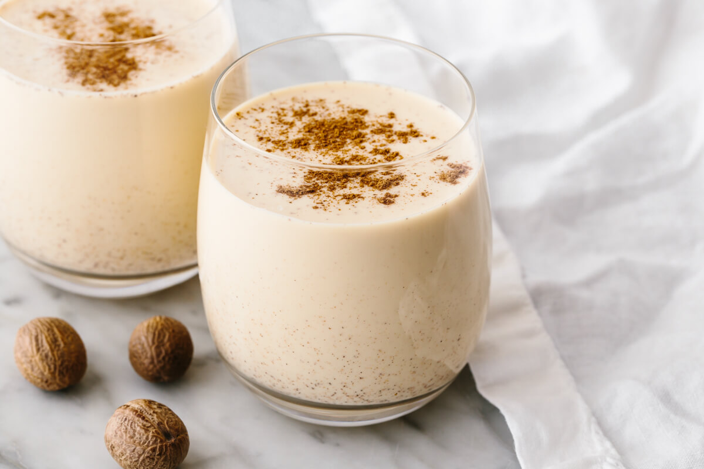

Eggnog

Description
As long as you have eggs, sigar, milk, and cream in the fridge, you can have eggnog anytime the craving hits.
Ingredients
- 6 large eggs
- 1 cup granulated sugar
- 2 cups whole milk
- 1 cup heavy cream
- 1/2 to 1 1/2 cups bourbon, rum, cognac, or a mix (optional)
- Freshly grated nutmet, to serve
Steps
- Separate the eggs. Separate the eggs, placing the yolks in a medium bowl and the whites in a large bowl (I recommend the 3-Bowl Method for this step). Cover the whites and refrigerate until needed, or freeze if aging the eggnog for longer than a day.
- Whisk the yolks with the sugar. Add the sugar to the yolks and whisk by hand or with a mixer until the mixture is smooth, creamy, and lightened to a lemon-yellow color.
- Whisk in the milk, cream, and liquor (if using). Add the milk, cream, and liquor and whisk until combined.
- Cover and refrigerate. Cover the bowl and refrigerate for at least 1 hour. The more liquor you add, the longer it will keep — non-alcoholic eggnog should be consumed within 1 day; eggnog with 1/2 to 1 cup of liquor will keep for several days; and eggnog with 1 1/2 cups of liquor will keep for several weeks and continue aging and thickening quite nicely. (If aging for longer than a few days, transfer the eggnog to a sealed glass container or a mason jar.)
- Whisk the egg whites. Just before serving, whisk the reserved egg whites in a stand mixer or with a hand mixer at high speed until the whites form stiff peaks.
- Fold the egg whites into the eggnog. Transfer the beaten egg whites to the bowl with the eggnog and gently fold or stir the whites into the base — this gives the eggnog a frothy, extra-creamy texture. Some of the egg whites will also float to the top, like cappuccino foam.
- Serve the eggnog. Transfer the eggnog to a pitcher or punch bowl. Serve in individual glasses with a grating of nutmeg over top.
Return Home